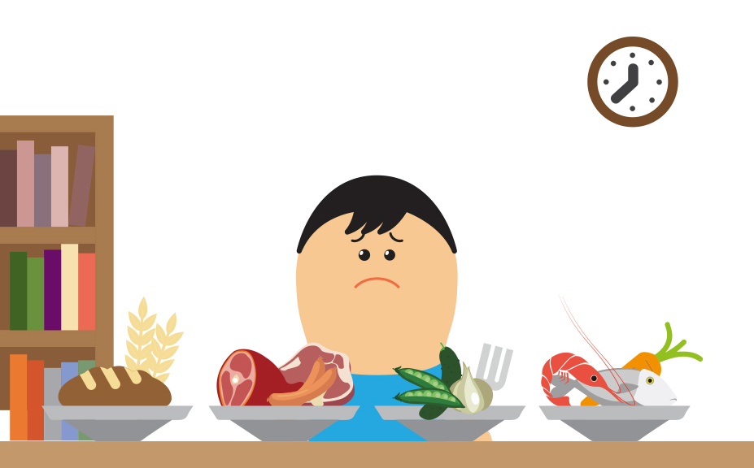

For Children's Healthy Eating Habits
Educational application for 3-6 years old children
Designers: Jaeyong Lee, Chao Chien, Jovana Kacavenda, Nan Yang, Madara Zeicane
My Roles in the team: Design research, graphic design, motion design
Picky’s Journey is an educational game that aims to cultivate the child’s healthy eating habit by visualizing how the food influences his or her body while playing the game. Parents and children can get personalized food recommendations like what kinds of food make their children healthier.
 Concept image: children playing with Picky's Journey app
Concept image: children playing with Picky's Journey app
Background
Developing children’s healthy eating habits is very important, especially for 3-6 years old children, since it influences not only their physical developments, but also their eating habits for the future. However, many children are picky eaters; they don’t take enough nutrition from food and sometimes their bad eating habits last when they are grown up.
Design Research
To figure out what are the touch points of this project, our team had various researches from kindergarten teacher interviews to anthropological research. First of all, we started with parents’ interviews to get understanding of general eating problems for children. Many parents who we talked with were concerned about their children’s eating problems, some of parents even do not know how to react in those situations. We also did children behavior researches through articles and children psychologist interviews.
The most crucial part of our researches was an anthropological approach. We visited Kaivopuisto international Kindergarten in Helsinki for one day, and observed 15 children’s lunchtime. To get various perspectives through our observing, we divided our roles that writing, drawing and recording. We noticed that many interesting insights about children eating behaviors that weren’t revealed in general researches like interviewing parents and teachers. Here are the briefs of our insight during observation.
“Making motivation about the eating experiences and educating children regarding food are really important to children not only for their physical developments, but also raising eating habits when they grow up.”
During an interview with a children psychologistDesign Concept
Throughout our researches, we figured out that children’s motivation for eating and providing information about food what they eat are core aspects of our project. Furthermore, we figured out that not only for children, but also the knowledge of parents about what kinds of food are necessary for their children is also an important factor to implement this corner stone.
We decided making an educational game application for 3-6 years old children to make them motivate eating experiences before and after meals. Children are easy feel empathy to imaginary characters that are usually in fairy tales, animations or toys. Kids would also have big interests learning and playing through visual contents. We would like to educate children by using these factors properly and tried to naturally induce their health eating habit while they are playing and learning with our new application.
Design Outcome

 Design concept: Picky's Journey
Design concept: Picky's Journey
Picky’s Journey is an educational game that aims to cultivate children’s healthy eating habit by visualizing how the food influence on their body while playing the game. Parents and children can get personalized food recommendations that what kinds of food make their children healthier.
By filling food history what children ate and playing game that reflects the food history, they can combine real world and virtual world at the same time. For example, if a child eats too much or take unhealthy food, the character will become too fat or weak to finish game missions. On the contrary, if the child eats properly, the character will gain extra strength and special equipment.
Children can have motivation to eat various food through this game, and parents can get useful information that help them to make their children have healthy eating habit. Furthermore, throughout the involvements of parents in food selection and feeding process, parents and children can make more interaction while learning about the food what they eat.
1. Create your own character
 Onboarding process: character creation
Onboarding process: character creation
The first step to have fun with Picky’s Jouney is registering users’ personal information. In this step, parents need to put their children’s age, height, weight, and gender as well as nationality. The reason getting nationality information of children is that the food generally has many varieties depending on their cultural background. Pickey’s Journey provides different presets through it.
After filling necessary information to start, users can create their own Picky character by given data. The character reflects children’s assumed physical developments. So, if a child’s height is short, the character also will be short. From beginning, unless users can get a basic character, while playing game, they can collect more points, which means that they could get different free characters. Of course, they can purchase special Picky characters in Picky’s shop.
2. Feed your character according to your meals Interaction example
Parents and children can feed character based on food what children eat. Picky’s Journey provides wide range of food, so users can pick them up to feed their characters. In case of non-registered food, users can freely create various food by using different ingredients. Through this process, children can learn about different influences of food as well as they will get items that will be used in game playing.
The items are metaphors that actual influences of food, so children can naturally learn about the food. At the same time, depending on what they feed to their character, the characters grow up.
3. Start your own journey with your friends Social function
In this part, children can play actual game. They will face with many varieties in the food world with Picky. They would go to the next stage by helps of special items that they got in process of the feeding part. The stages are consisted with hundreds of different levels, but children cannot play over more than 30min per each.
The system of Picky’s Journey is that a character uses their energy constantly while they are running, and the resources are the food what children fed them before. To play more, children need to feed character after next their meals, which mean that Picky’s Journey not only prevent the game addiction of children, but also give constant motivation of eating various food. In addition, Picky’s Journey also provides the networking game system, so they also check their friends’ game score during playing game.
4. Check and analyze your eating habits in Picky's Health Center Analysis of health condition according to food intakes
Parents and children can get recommendations of food for nutrition balances and healthy eating habit. Picky’s Health Center provides analysis of food data based on recorded food history, so parents and children could get knowledge of nutrition statement. If children need to eat certain food more, for example, Picky’s Health Center suggests taking some food for next meal to make children’s proper nutrition balances.
Every meal recorded, so parents can always check the children’s food history as well as the influences of food what they would serve for their children.